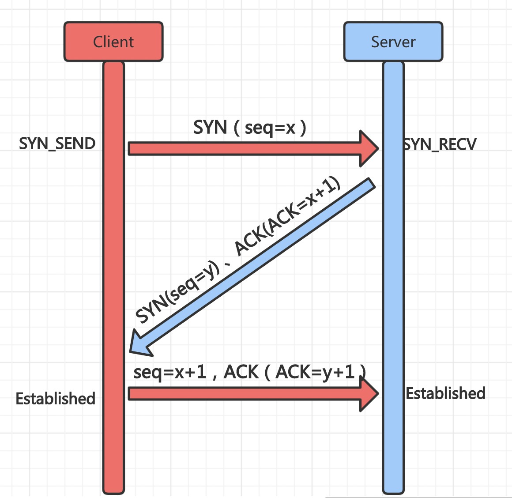
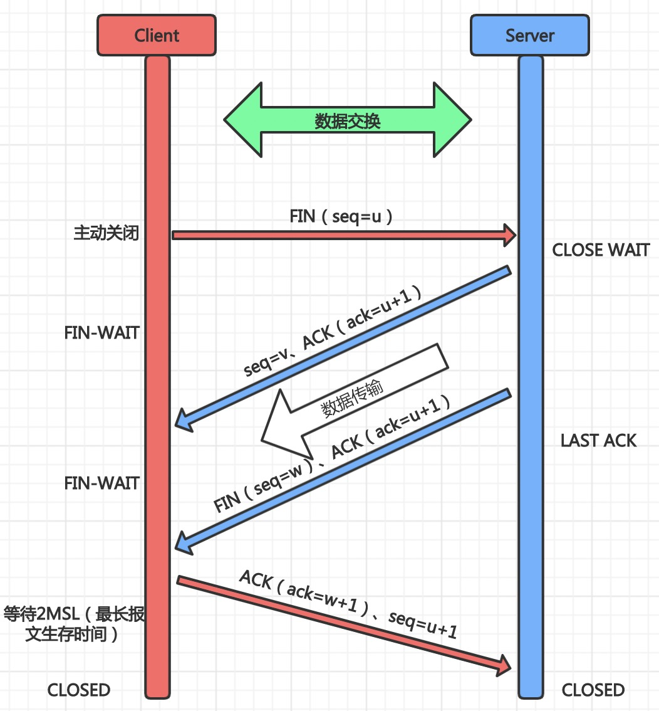

TCP和UDP
/ / 点击 /- TCP（（Transmission Control Protocol，传输控制协议））
TCP协议是面向连接、可靠的字节流传输服务。TCP协议在C/S间数据交换前，需要先在上方建立一个TCP连接，之后才开始传输数据，并提供超时、重发、丢弃重复数据、数据校验和流量控制等功能。
特点：面向连接、可靠通信、面向字节流
应用层协议：HTTP、HTTPS、SSH、FTP、SMTP
- UDP（User Data Protocol，用户数据报协议）
UDP是一个面向数据报的传输层协议，不具有可靠性，只是把数据发出去，不保证数据是否能到达S端。因为UDP在传输数据前不需要建立一个连接，所以它的传输效率很快，不能保证数据的可靠。
特点：无连接、不可靠、面向数据报
应用层协议：DHCP、DNS
- TCP协议建立连接的三次握手

第一次握手（请求建立连接）C端发送建立连接请求，携带序列号seq=x 标示SYN=1，此时C端处于SYN_SEND状态；
第二次握手（确认请求）S端收到后，发出确认信息，确认信息ACK=x+1，同时携带自己的序列号SYN=1，seq=y；
第三次握手（建立连接）C端收到S端的确认请求后，向S端发送确认ACK=y+1，S端收到请求后两端都处于Established状态，表示当前的一次TCP连接成功。
- TCP断开连接的四次挥手

第一次挥手（请求释放）C端发送释放连接的请求信号FIN=1，seq=u，此时C端处于FIN WAIT状态,不再发送数据给S端；
第二次挥手（确认请求）S端收到释放请求后，发送确认收到请求释放，ACK=1,ack=u+1,此时S度啊处于CLOSE EAIT状态，不再接收C端数据，但是需要发送给C端的数据可继续发送；
第三次挥手（确认释放）当S端不再有数据需要发送给C端时，发送却是释放连接，携带FIN=1，seq=w，ACK=1，ack=u+1，此时S端处于LAST ACK状态，等待C端的最终确认；
第四次挥手（最终释放确认）当C端收到了确认释放后，随即发送最终释放确认，ACK=1，ack=w+1，seq=u+1；此时C端在等待2MSL后关闭连接，S端收到请求后同样关闭。
为什么需要三次握手？
如果是两次握手，服务端确认请求后，不知道客户端是否能收到了消息，服务端的消息得不到确认。(服务端消息等不到确认)
如果客户端发送的请求网络延迟了，超时后有客户端重新发起请求，倘若在重发请求正常进行完毕后，再收到之前网络拥塞的请求，再和服务端建立连接，这个时候就可能服务端一直等待，导致服务端连接资源浪费。为什么第三次握手是seq=x+1，而不是x+2？
从握手的规律可以看出来seq在确认请求中会变做确认表示即ack，ack会在seq值的基础上加1，同时TCP规定，SYN不携带数据，但会消耗掉一个序列号，SYN=1时会消耗seq的一个值（即加1），第三次握手ACK=1、SYN不等于1，而ACK=1不消耗seq所以seq=x+1而不是x+2，挥手中FIN也和SYN一样TCP建立连接后客户端出现故障会怎样？
服务端有个计数器，一般两小时，两小时如果没有收到任何数据，会发送探测报文段，发了几个报文段如果还是没反应，服务端就会关闭连接。